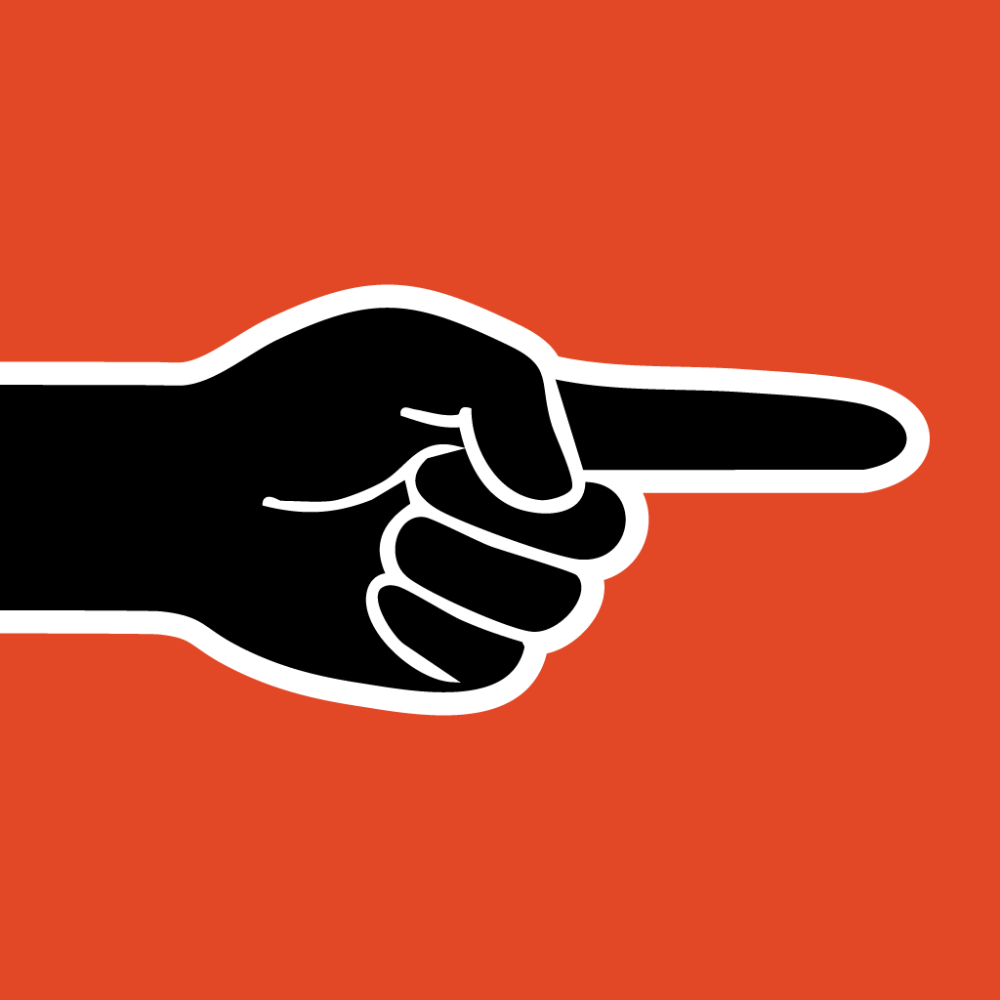

A focus app for the moment before the feed wins
Most timers keep counting while you scroll. Doomscroll Totem makes the phone movement itself part of the session.
Products that help people in unusual ways

FEATURED APP
Doomscroll Totem is a phone-down focus app from goodideed. Start a session, put the phone down, and let motion detection add the friction your attention needs.
Most timers keep counting while you scroll. Doomscroll Totem makes the phone movement itself part of the session.

Start a focus session, leave the phone still, and get clear feedback when the doomscroll reflex interrupts it.

Collectible totems make progress feel visible without turning focus into pressure or punishment.
WHY IT EXISTS
It is built for people who open TikTok, Instagram, X, Reddit, YouTube Shorts, or any feed almost automatically. Doomscroll Totem does not pretend to be therapy, a blocker, or a cure. It is a small behavioral tool that makes the habit loop visible at the exact moment it usually disappears.
The app combines motion detection, focus sessions, grace windows, Pomodoro support, Low Power Mode, and a light gamified layer so putting the phone down feels concrete.
Explore the focus app
Excuse you Privacy-first habit formation